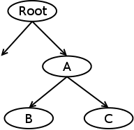

LSFMM: Soft reclaim
Resource limits are often implemented in "soft" and "hard" forms. The soft limit, being the lower of the two, can be exceeded if the resource in question is not currently in short supply; the hard limit, instead, is always enforced. In the memory control group (memcg) context, one could interpret the soft limit as the amount of memory guaranteed to a group, while the hard limit is the maximum the group will ever be allowed to use. Memory usage between the soft and hard limits is only allowed if the system is not currently short of memory.
Michal's patch set comes in two parts. The first of which is a relatively simple patch; when memory gets tight, the kernel will scan over the memcg hierarchy and reclaim memory from any group that is over its soft limit while leaving others alone. Should memory remain tight after this pass has completed, a second pass will be done where every group is subject to reclaim. This part of the patch set did not generate a lot of discussion.
Part two gets deeper into the idea of what a soft limit actually means. Michal's implementation treats a soft limit of zero as being "unlimited"; it also assumes that if somebody does not bother to set a soft limit on a

memcg, they don't care about the resources available to that memcg, so it can always be reclaimed from. The most controversial part of the implementation, though, is this: if a memcg has exceeded its soft limit, all child memcgs underneath it will be reclaimed from, regardless of whether they have exceeded their soft limits or not. So, given a memcg hierarchy like that seen to the right, if group A is over its soft limit, groups B and C will be reclaimed from whether they are within their soft limit or not. Much of the session was dedicated to the discussion of this topic; indeed, that argument continues on the mailing list as of this writing.Those opposed to this behavior feel that it violates the meaning of a soft limit, which they interpret as a promise of a minimum amount of memory that a memcg can use. If one child memcg exceeds its limit to the point that it puts the parent over the soft limit as well, then all of its siblings will suffer, even if they remain below their soft limits. It would be better, it was argued, to simply reclaim from the specific memcg that has exceeded its soft limit while leaving the others alone. In a properly configured memcg setup, the parent should not go over its limit unless at least one child has; reclaiming from that child should bring the parent below its limit as well. Only in the case of a misconfigured control group, where no over-limit child can be found, would it make sense to reclaim from all child groups.
Michal's view is a bit different, needless to say. He sees the parent group's soft limit as a sort of "gatekeeper" used to put an overall limit on a group of memcgs. In this view, it would make sense to "misconfigure" the control groups so that the parent could go over the soft limit even if all children remain below their limits; it's simply another memory management policy that the administrator can elect to use.
No consensus was reached on this particular issue, though the soft reclaim work as a whole was universally liked. As Hugh Dickins put it, everybody is happy that Michal is creating something that is better than what the kernel has now, but many of them disagree with the idea of reclaiming from child groups in this way. This has the look of a debate that won't be resolved anytime soon.
A few other memcg issues were touched on briefly. Deadlocks within the out-of-memory killer are evidently a problem at times, especially if a process runs into an out-of-memory situation while holding an inode's i_mutex lock. The suggest solution was to not go into the out-of-memory killer when certain locks are held; instead, allocation attempts should just fail. There were also some vaguely-expressed concerns about dirty page accounting which, evidently, come down to "really ugly locking."
At this point, time ran out. The soft reclaim discussion appears poised to
continue for some time yet, though; stay tuned.
| Index entries for this article | |
|---|---|
| Kernel | Control groups |
| Kernel | Memory management/Page replacement algorithms |
| Conference | Storage, Filesystem, and Memory-Management Summit/2013 |
Posted Apr 24, 2013 4:23 UTC (Wed)
by dlang (guest, #313)
[Link]
As a result, it seems to be that both modes of operation need to be supported
1. if a group is over it's softlimit, look inside that group.
1b. if any child is over it's limit, reclaim from it
1c. if all children are within their soft limit, but the parent is still over it's softlimit, reclaim from all children.
that way the kernel is not determining the policy that the limit must be >= the sum of the limits of it's children. If people believe that's the way they want to configure things, it works. If people want to configure things differently, it still works in a predictable way.
and let's face it, people are going to misconfigure systems, even if the policy is that the parent must be >= the children, how is the kernel going to deal with these systems?
LSFMM: Soft reclaim